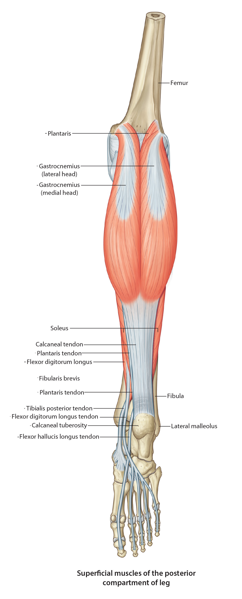

Lab 7 - Module 2 - Posterior Compartment of the Leg: Page 2 of 2
×

Superficial Posterior Compartment
|  |
| Tap on image to enlarge |
| Return to the posterior leg. |
| Add the Plantaris muscle. |
|
Origin - Inferior end of the lateral supracondylar line of the femur and the oblique popliteal ligament Insertion - Joins the tendon of the gastrocnemius and soleus to insert on the calcaneous via the Achilles tendon Innervation - Tibial Nerve Action - Weakly assists gastrocnemius in plantar flexion and knee flexion |
| The Triceps Surae Group consists of the two heads of the Gastrocnemius and the Soleus muscles: |
| Add the Soleus muscle. |
|
Origin - Posterior surface of the head of the fibula and the superior 1/4th of the fibula; medial border of the tibia Insertion - Joins the tendon of the gastrocnemius to insert via the Achilles tendon Innervation - Tibial Nerve Action - Plantar flexes the foot when the knee is bent |
| Add the Gastrocnemius muscle. |
|
Origin - Superior to medial condyle of the femur (medial head), lateral aspect of lateral condyle of the femur (lateral head) Insertion - Posterior surface of the calcaneous via the Achilles (calcaneal) tendon Innervation - Tibial Nerve Action - Plantar flexion of the foot, assists with knee flexion |
| Add the Calcaneal Tendon. |